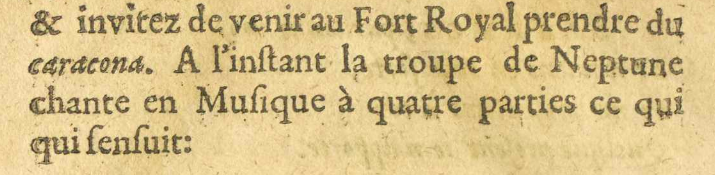
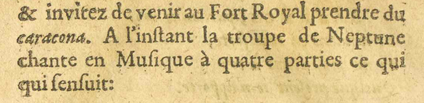
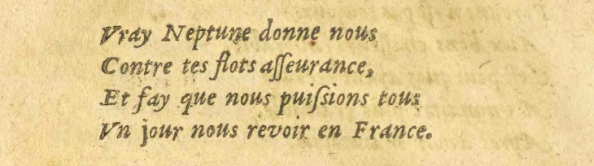
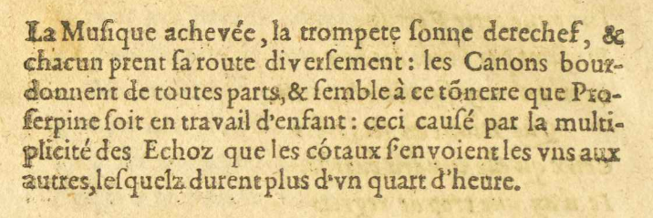
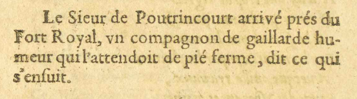
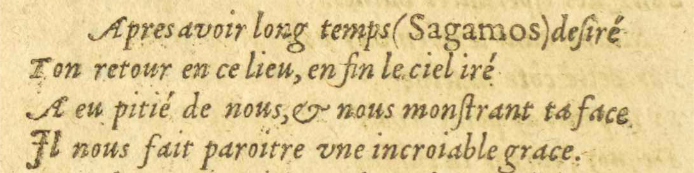
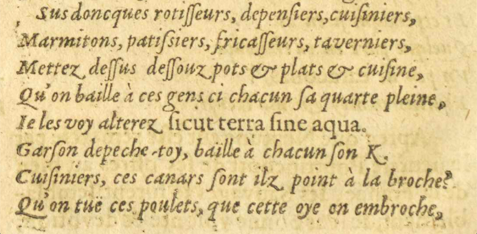

10/11
 
& invitez de venir au Fort Royal

& invitez de venir au Fort Royal Établissement fortifié de Port-Royal. prendre du
Établissement fortifié de Port-Royal. prendre du
caraconas. A l'inſstant la troupe de Neptune Dieu d'origine latine des eaux vives et des sources, puis des mers.
Dieu d'origine latine des eaux vives et des sources, puis des mers.
chante en Muſsique à quatre parties ce qui
quiqui ſenſuits'ensuit :
- Vray NeptuneDieu d'origine latine des eaux vives et des sources, puis des mers. donne nous
- Contre tes flots aſsſseurance,
- Et fay que nous puiſssions tous
- VnUn jour nous revoir en France.

La Muſsique achevée, la trompete ſsonne derechef#18, &
chacun prentE17 E18 : prend ſsa route diverſsement : les Canons bour-
donnent de toutes parts, & ſsemble à ce tõnerretonnerre que Pro-
ſserpine Divinité romaine des Enfers et aussi des saisons. foit en travail d'enfant : ceci cauſsé par la multi-
Divinité romaine des Enfers et aussi des saisons. foit en travail d'enfant : ceci cauſsé par la multi-
plicité des Echoz que les cótaux ſs'envoient les vnsuns aux
autres, leſsquelsE09 E17 : leſsquelz durent plus d'vnun quart d'heure.

Le Sieur de Poutrincourt Fondateur de la colonie de Port-Royal en Nouvelle-France. arrivé prés du
Fondateur de la colonie de Port-Royal en Nouvelle-France. arrivé prés du
Fort RoyalÉtablissement fortifié de Port-Royal., vnun compagnon de gaillarde hu-
meur qui l'attendoit de pié ferme, dit ce qui
s'enſsuit.
- Après avoir long tempslongtemps (Sagamos) deſsiré
- Ton retour en ce lieu, en finenfin le ciel iré#19
- A eu pitié de nous, & nous monſstrant ta face,E09 :
- Il nous fait paroitreE17 E18 : Nous a fauoriſsé d'; E11 : Il nous a fait paroitre vneune incroyableE09 : incroiable grace.
- Sus#20 doncques#11 rotiſsſseurs, depenſsiers, cuiſsiniers,
- Marmitons, patiſssiers, fricaſsſseurs, taverniers,
- Mettez deſsſsus deſsſsouz pots & plats & cuiſsine,
- Qu'on baille#21 à ces gens ci chacun ſsa quarte#22 pleine,
- IeJe les voy alterez ſsicut terra ſsine aqua
 « Expandi manus meas ad te anima mea sicut terra sine aqua tibi » (Psaume 143, verset
6)..
« Expandi manus meas ad te anima mea sicut terra sine aqua tibi » (Psaume 143, verset
6).. - Garſson depeche toyE09 : depeche-toy, baille#21E09 E12 : baïlle à chacun ſson Kcaca.
- Cuiſsiniers, ces canars ſsont ilz point à la broche ?
- Qu'on tuë ces poulets, que cette oye on embroche,
